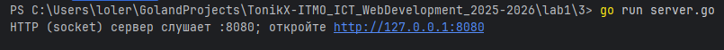
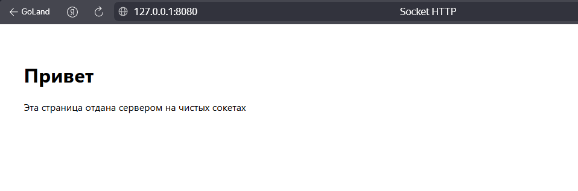

Задание 3: HTTP-сервер на сокетах
Условие
Реализовать серверную часть приложения. Клиент подключается к серверу, и в ответ получает HTTP-сообщение, содержащее HTML-страницу, которая сервер подгружает из файла index.html.
Требования:
- Обязательно использовать библиотеку
socket
Принцип работы
-
Клиент отправляет HTTP-запрос типа GET на адрес сервера.
-
Сервер:
- читает и разбирает запрос;
- загружает файл index.html;
- формирует и отправляет корректный HTTP-ответ с заголовками и телом;
- в случае ошибки — формирует ответ с соответствующим кодом (404, 405).
- Клиент получает HTML-страницу и отображает её.
Код программы
Сервер (server.go)
package main
import (
"bufio"
"errors"
"fmt"
"io"
"net"
"os"
"path"
"strings"
"time"
)
// Константы для сервера
const (
addr = ":8080"
fileToServe = "index.html"
contentType = "text/html; charset=utf-8"
readTimeout = 5 * time.Second
)
// parseRequestLine читает первую строку HTTP-запроса: "GET / HTTP/1.1"
func parseRequestLine(r *bufio.Reader) (method, path, proto string, err error) {
line, err := r.ReadString('\n')
if err != nil {
return "", "", "", err
}
line = strings.TrimRight(line, "\r\n")
parts := strings.Fields(line)
if len(parts) != 3 {
return "", "", "", errors.New("bad request line")
}
return parts[0], parts[1], parts[2], nil
}
// drainHeaders дочитывает остальные заголовки до пустой строки.
func drainHeaders(r *bufio.Reader) error {
for {
line, err := r.ReadString('\n')
if err != nil {
return err
}
line = strings.TrimRight(line, "\r\n")
if line == "" {
return nil
}
}
}
// writeResponse пишет статусную строку, заголовки и тело.
func writeResponse(w io.Writer, status int, statusText string, headers map[string]string, body []byte) error {
bw := bufio.NewWriter(w)
if _, err := fmt.Fprintf(bw, "HTTP/1.1 %d %s\r\n", status, statusText); err != nil {
return err
}
if headers == nil {
headers = map[string]string{}
}
headers["Date"] = time.Now().UTC().Format(time.RFC1123)
headers["Server"] = "Go-Socket-Server"
headers["Connection"] = "close"
if body != nil {
headers["Content-Length"] = fmt.Sprintf("%d", len(body))
}
for k, v := range headers {
if _, err := fmt.Fprintf(bw, "%s: %s\r\n", k, v); err != nil {
return err
}
}
if _, err := bw.WriteString("\r\n"); err != nil {
return err
}
if body != nil {
if _, err := bw.Write(body); err != nil {
return err
}
}
return bw.Flush()
}
func handleConn(c net.Conn) {
defer c.Close()
_ = c.SetReadDeadline(time.Now().Add(readTimeout))
reader := bufio.NewReader(c)
method, urlPath, proto, err := parseRequestLine(reader)
if err != nil {
_ = writeResponse(c, 400, "Bad Request", map[string]string{
"Content-Type": "text/plain; charset=utf-8",
}, []byte("Bad Request\n"))
return
}
urlPath = strings.SplitN(urlPath, "#", 2)[0]
urlPath = strings.SplitN(urlPath, "?", 2)[0]
cleanPath := path.Clean(urlPath)
if cleanPath == "." {
cleanPath = "/"
}
fmt.Printf("%s %s (%s) from %s -> cleanPath=%q\n",
method, urlPath, proto, c.RemoteAddr(), cleanPath)
if err := drainHeaders(reader); err != nil {
_ = writeResponse(c, 400, "Bad Request", map[string]string{
"Content-Type": "text/plain; charset=utf-8",
}, []byte("Bad Request\n"))
return
}
if method != "GET" {
_ = writeResponse(c, 405, "Method Not Allowed", map[string]string{
"Allow": "GET",
"Content-Type": "text/plain; charset=utf-8",
}, []byte("Method Not Allowed\n"))
return
}
if cleanPath == "/" {
cleanPath = "/index.html"
}
if cleanPath != "/index.html" {
_ = writeResponse(c, 404, "Not Found", map[string]string{
"Content-Type": "text/plain; charset=utf-8",
}, []byte("Not Found\n"))
return
}
data, err := os.ReadFile(fileToServe)
if err != nil {
if os.IsNotExist(err) {
_ = writeResponse(c, 404, "Not Found", map[string]string{
"Content-Type": "text/plain; charset=utf-8",
}, []byte("index.html not found\n"))
} else {
_ = writeResponse(c, 500, "Internal Server Error", map[string]string{
"Content-Type": "text/plain; charset=utf-8",
}, []byte("Internal Server Error\n"))
}
return
}
_ = writeResponse(c, 200, "OK", map[string]string{
"Content-Type": contentType,
}, data)
}
func main() {
ln, err := net.Listen("tcp", addr)
if err != nil {
panic(err)
}
defer func(ln net.Listener) {
err := ln.Close()
if err != nil {
fmt.Println(err)
}
}(ln)
fmt.Printf("HTTP (socket) сервер слушает %s; откройте http://127.0.0.1%v\n", addr, addr)
for {
conn, err := ln.Accept()
if err != nil {
fmt.Println("accept error:", err)
continue
}
go handleConn(conn)
}
}
HTML-страница (index.html)
<!doctype html>
<html lang="ru">
<head>
<meta charset="utf-8">
<title>Socket HTTP</title>
<meta name="viewport" content="width=device-width, initial-scale=1">
<style>body{font-family:system-ui, sans-serif; padding:2rem}</style>
</head>
<body>
<h1>Привет</h1>
<p>Эта страница отдана сервером на чистых сокетах</p>
</body>
</html>
Запуск
- Необходимо открыть терминал.
- Запустите сервер:
go run server.go - Перейдите по ссылке, указанной в терминале.
Результат
Cо стороны сервера видим следующее:

Переходим по адресу, указанному в терминале: http://127.0.0.1:8080
Видим HTML-страницу, полученную при помощи сервера:

Значит, цели задания выполнены.
Выводы
-
Реализован собственный HTTP-сервер с использованием библиотеки net и протокола TCP.
-
Сервер корректно обрабатывает запросы типа GET и возвращает содержимое HTML-файла.
-
Обработаны основные ошибки: отсутствие файла (404) и неподдерживаемые методы (405).
-
Задание позволило понять базовые принципы работы HTTP-протокола на низком уровне.